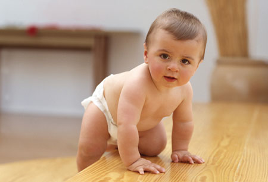

В 7 месяцев одни дети уже хорошо ползают, другие только пытаются оторвать туловище от пола. Некоторые осваивают сидение раньше ползания. Многие встают с поддержкой.
В возрасте 7 месяцев ребенок подолгу лепечет, повторяя одни и те же слоги типа "ба-ба-ба" или "ма-ма-ма". У него активно функционируют кисти рук, он легко захватывает большие предметы, например, погремушку, перекладывает ее из руки в руку, стучит. Хорошо сидит без поддержки, при этом спина имеет легкое искривление от крестца до шейного отдела позвоночника. Многие дети в этом возрасте хорошо ползают, подтягиваются и встают в кроватке.